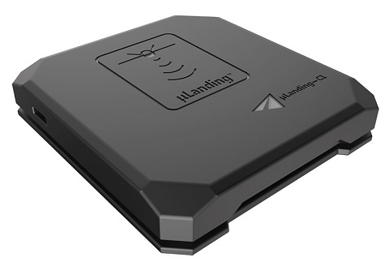

说了半天配件，这篇文章收个尾吧。接下去就要讲讲几个主要配件如何选购了。
前面几篇介绍了四轴上面的主要配件，还有一些周边配件将在篇文章介绍。当然四轴配件五花八门，单单几篇文章是没法将所有的配件给介绍完的。后续如果有新的好玩的配件出来，小编也会研究研究并且介绍给大家的。
来一张酷酷的航拍无人机图吧
平衡充
平衡充是专门用于给锂电池充电的充电器。
如3s电池，内部是3个锂电池，因为制造工艺原因，没办法保证每个电池完全一致，充电放电特性都有差异，电池串联的情况下，就容易造成有些放电过度或充电过度，充电不饱满等，所以解决办法是分别对内部单节电池充电。
动力锂电都有2组线，1组是输出线（2根），1组是单节锂电引出线（与s数有关），充电时按说明书，都插入充电器内，就可以进行平衡充电了。
切忌用普通充电器给动力电池充电。
GPS/RTK模块
GPS大家应该都很熟悉，每个人的手机里面几乎都有这个模块，用来定位用的。自是这货用在无人机上的话就变了个外形，而且还得拿跟杆子支起来。
28颗卫星分布在6条交点互隔60度的轨道面上，距离地面约20000千米。已经实现单机导航精度约为10米，综合定位的话，精度可达厘米级和毫米级。但民用领域开放的精度约为10米。
RTK是GPS的升级版，精度能达到厘米级别。现在很多无人机编队，空中表演就会用到这个模块。下面是百科上对于RTK技术的解释。
RTK（Real - time kinematic，实时动态）载波相位差分技术，是实时处理两个测量站载波相位观测量的差分方法，将基准站采集的载波相位发给用户接收机，进行求差解算坐标。这是一种新的常用的卫星定位测量方法，以前的静态、快速静态、动态测量都需要事后进行解算才能获得厘米级的精度，而RTK是能够在野外实时得到厘米级定位精度的测量方法，它采用了载波相位动态实时差分方法，是GPS应用的重大里程碑，它的出现为工程放样、地形测图，各种控制测量带来了新曙光，极大地提高了作业效率。
这货就比较复杂了，还需要有个地面站做个校准。
光流
光流(optical flow)法是指时变图像中模式运动速度。因为当物体在运动时，它在图像上对应点的亮度模式也在运动。
光流模块使用一个向下的摄像头和一个向下的距离传感器来进行位置估算。能够达到跟随等功能。
像PX4FLOW这款光流模块，它的原生分辨率为752x480像素，并以400 Hz的速度计算4倍于4倍和裁剪面积的光流量，使其具有很高的光灵敏度。
电压报警器
电压报警器适用于没有数传，没有OSD的情况下。
在飞机电池电压降低的提供报警，来提示飞手电池不足及时充电，这样可以保证电池不会过放而导致损坏

很多飞控其实都自带电压检测功能的。
距离传感器
距离传感器一般是用来测量飞机与地面之间的距离。可以用于地形跟踪、精确悬停、防撞等。传感器通常可以连接到串行（PWM）或I2C端口（取决于设备驱动程序），并通过设定一个特定的参数在端口上启用。
测量距离的方法一般会使用激光雷达精度很高，但是很贵。也有用超声波的，不过测量距离短精度会低很多。
而有个叫做uLanding-Lite的微波雷达高度计，相对精度和测量距离要好些，据说动态精度能达到4.5cm

气压传感器
气压传感器一般会整合到飞控上面去，用来辅助测量无人机的飞行高度的，由于气压不是特别稳定，所以测出来的高度也会有很大的误差。
指南针
飞控上一般也会带上指南针传感器，用来识别无人机的当前朝向，自动飞行的时候很有用。
如果无人机配有GPS的话，一般GPS也会带上指南针，这样飞控会将自身的指南针数据和GPS的指南针数据结合相互参考，提高策略精度。
云台&相机
文章开头那种酷酷的图片中有个照相机，这可是航拍专用的照相机，很多电视电影的空中镜头就是用它来拍的。
这种照相机不能直接装在飞机机架上，因为飞机飞起来后在空中的抖动太大，照相机一抖的话就拍不出好视频了。云台就是做这个缓冲作用，它能让飞机在抖的时候下面的照相机不抖动。
Comments
There are no comments yet.